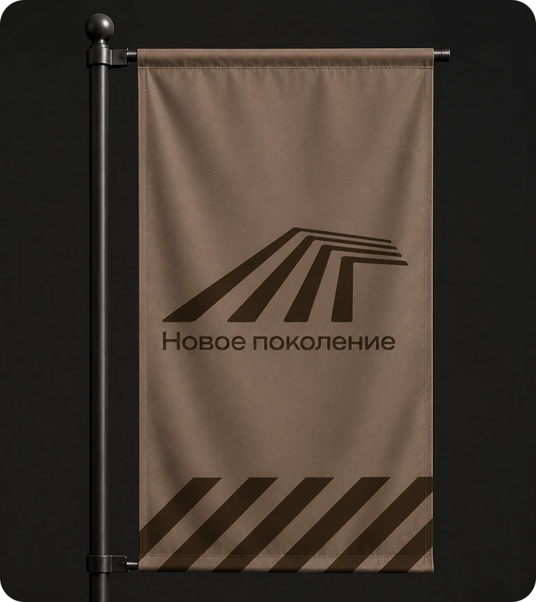

Наставничество
Опыт старших становится ресурсом для самостоятельного шага, а не барьером.
Молодежная организация / открытая платформа
«Новое поколение» соединяет молодежь, наставников, образование, бизнес и власть, чтобы идеи доходили до реального результата.


Не наблюдать за изменениями со стороны — собирать вокруг идеи людей и доводить её до результата.
Зачем мы нужны
У молодых людей есть идеи и готовность действовать. Не всегда есть доступ к команде, опыту и понятному маршруту. Мы собираем эту инфраструктуру в одной открытой среде.
Создать устойчивую среду, где каждый молодой человек может быть услышан, получить поддержку инициативы и довести её до общественно полезного результата.
Опыт старших становится ресурсом для самостоятельного шага, а не барьером.
Прямой разговор молодежи с властью, бизнесом, наукой и обществом.
Каждая договоренность получает владельца, срок и измеримый результат.
Горизонтальные связи и взаимопомощь важнее личной конкуренции.
Учиться, пробовать, адаптироваться и становиться сильнее как сообщество.
Маршрут участника
Последовательность, которая превращает пассивное наблюдение в опыт реального влияния.
Высказать позицию, предложить идею или обозначить проблему — и увидеть, что её зафиксировали.
Сформулировать решение, научиться работать с данными, аргументировать и договариваться с другими.
Запустить инициативу, найти ресурсы и показать общественно полезный эффект — вместе с наставником.
Разные точки входа
Попробовать идею в реальном деле и получить обратную связь от практиков.
Проектные мастерские · карьерные встречиПоказать прикладные навыки, выйти из роли исполнителя, увидеть карьерные примеры.
Реальные кейсы · встречи с выпускникамиСобрать команду, найти ресурсы и пройти путь от идеи до работающего проекта.
Проектные офисы · акселерация · открытый чатПолучить горизонтальные связи, наставнический опыт и управленческую практику.
Отраслевые клубы · менторствоБезопасная среда, ролевые модели и менторские пары для первых шагов в лидерстве.
4 трека · встречи с женщинами-лидерами · поддержкаОткрытая экосистема
Можно начать с проекта, коммуникации, волонтерства или собственного профессионального трека.
Формируем повестку, соединяем разные группы и готовим предложения для города и региона.
Развиваем лидерство через наставничество, образование и практическую деятельность.
Собираем события, стратегические сессии и программы, в которых идеи становятся проектами.
Помогаем событиям и социальным инициативам, развивая ответственность и команду.
Рассказываем о людях и результатах через новости, интервью, фото и видео.
Программа для студентов факультета государственного и муниципального управления: ценности, компетенции, реальные кейсы и сообщество выпускников.
Узнать о треке ↗Среда, которая поддерживает
Организация работает на стыке образования, профессиональной среды и общественных институтов. Это делает путь участника прозрачным — от идеи к команде, от команды к проекту, от проекта к признанию.
Связаться с проектом
Выбери точку входа: предложи инициативу, присоединись к проектной команде, стань наставником или помоги рассказать о результатах.